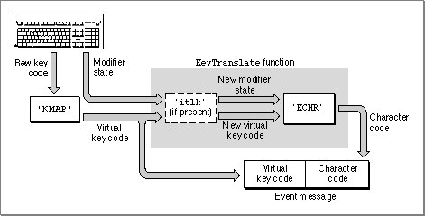

Legacy Document
Important: The information in this document is obsolete and should not be used for new development.
Important: The information in this document is obsolete and should not be used for new development.


Key Translation
Key translation is the conversion of keystrokes to character codes. In early versions of the Macintosh, keyboard translation was simple and direct: two low-memory pointers in the System file (accessed through global variablesKey1TransorKey2Trans) pointed to the translation routines. Those pointers are still available and are called by the Macintosh Plus but are not called by newer systems. The pointers are preserved so that applications that call them can still function correctly. However, they now point to a routine that implements a new standard mechanism.The standard mechanism was developed with the advent of ADB keyboards; it was needed to map the different sets of raw key codes to a standard set of virtual key codes, which could in turn be mapped to character codes. In the standard method, a keystroke generates an interrupt; the keyboard driver maps the raw key code to a virtual key code, which it sends to the Event Manager; the Event Manager maps the virtual key code to a character code, and returns the character code to the driver. The driver in turn posts the key-down event. This method has two advantages:
The Macintosh keyboard routines handle the keyboard properly for all script systems. Except for purely hardware-specific characteristics such as controlling lights on the keyboard, the function of the keyboard is completely determined by character-encoding tables in the keyboard-layout resource (with an optional associated key-remap resource). For each virtual key code and each possible modifier-key state, the character-encoding tables specify the equivalent character code. Figure C-3 summarizes the key translation process:
- The mapping from raw key code to virtual key code achieves keyboard hardware independence. The raw mapping routine uses the table of a key-map resource for the keyboard, in the System file or in ROM.
- The mapping from virtual key code to character code allows support of multiple character sets. It is performed by the Event Manager
KeyTranslatefunction, which is accessed through the_KeyTranstrap (not to be confused with theKey1TransorKey2Transpointers).KeyTranslatemaps the virtual key code (plus modifiers, if any) to a character code, using tables in a keyboard-layout resource, also in the System file or in ROM. (KeyTranslatealso handles dead keys; see page C-19.)
The net result of the process of key translation is a virtual key code and a character code in the
- A keystroke initially produces a raw key code.
- The keyboard driver uses the hardware-dependent key-map resource to map that raw key code into a hardware-independent virtual key code, and to set bits indicating the state of the modifier keys.
- It then calls the Event Manager
KeyTranslatefunction. The optional key-remap resource specifies howKeyTranslateshould remap certain key combinations on certain keyboards before it performs its mapping. The key-remap resource reintroduces hardware dependence because certain scripts, languages, and regions need subtle differences in layout for specific keyboards. Generally, the key-remap resource affects only a few keys.KeyTranslateuses the keyboard-layout resource to map a modifier state and a virtual key code into a character code, such as an ASCII code.KeyTranslatereturns the character code, and if the character code is nonzero the keyboard driver posts the key-down event into the event queue.
messagefield of an event record, and modifier-key information in themodifiersfield of the event record.
Figure C-3 The key translation process
- Note
- On the Macintosh Plus, the event record contains raw key codes, not virtual key codes. However, except in the case of the small Macintosh 512K Keyboard with ISO layout, the Macintosh Plus raw key codes are identical to the virtual key codes that would have been produced.

